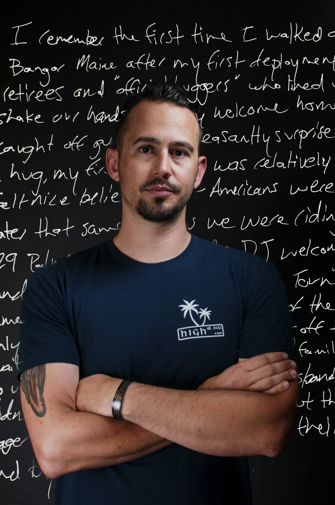
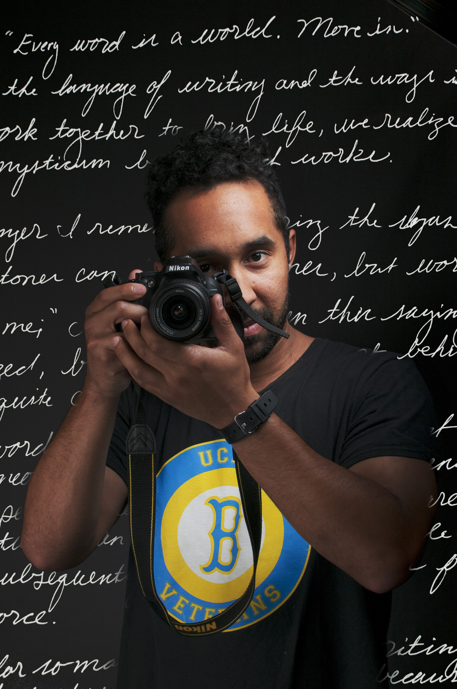
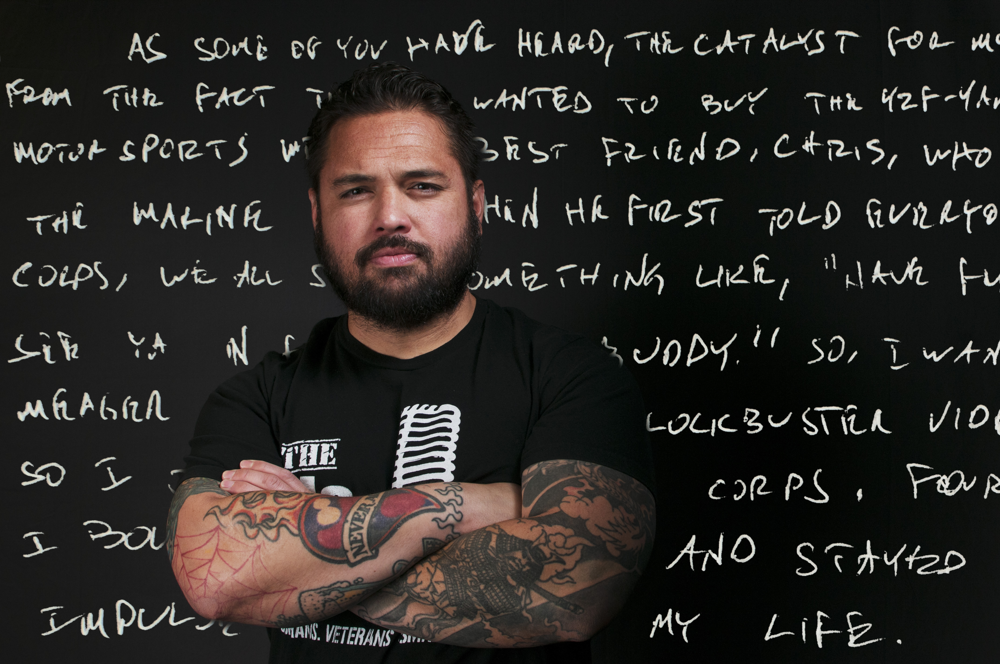

War Stories
Written by William Thorne. Photo illustrations by Hannah Burnett.
"Have you ever killed someone?"
"Why did you join?"
"Thank you for your service."
Student veterans usually react with a shoulder shrug, a brief, "Oh you know, for the money," or an awkward "You're welcome."
Instead of owning their military service, some choose not to identify as veterans or to downplay this significant aspect of their identities.
But in a bright room on the second floor of the Humanities Building, student veterans freely discuss the soaring highs and devastating lows of serving in the military and the stigma they face outside the classroom. Nine men and one woman, seven ex-Marines and three ex-Army make up English Composition M138: "Writing Military Experience," a creative writing course taught by professor Reed Wilson, exclusively open to student veterans.
Among the group are students who have known extreme poverty, drug abuse, alcoholism, eating disorders, mental illnesses and post-traumatic stress disorder. The banter in the room is acerbic, with cutting jokes and put-downs flying back and forth.
"There's one guy that's not here that I openly beat on in each of my papers," one student said jokingly, causing a ripple of knowing laughter from the others.
But beneath the fooling around is a bedrock of respect, honesty and shared experiences. Almost all the veterans present have been deployed to fight in various conflicts, mostly in Iraq and Afghanistan, and many of them have struggled to adapt to civilian life after they "got out."
UCLA has more than 100 student veterans, and the community keeps a low profile. If they identify themselves as veterans, people's perception of them is immediately warped.
After leaving the military, many wanted to steer clear of other veterans and the memories associated with their time on deployment. But this class offers a different opportunity for each them: a chance to be open and express past experiences they have left unexplored or buried deep in their subconsciousness.
Each week, the veterans take turns reading out their story, poem or other piece of creative writing.
Some weeks the stories come easily, some weeks they don't. Some weeks the memories flow through the keys and onto the screen, some weeks they don't.
"I Changed My Family Cycle" by Colt Gordon
I come from an interesting background. Ironically it was somewhat of a war zone. My dad was a full-time violent alcoholic and a part time construction worker. My mom suffered from chronic PTSD from her pedophile of a stepfather who molested her and her sisters repeatedly. Getting smacked around was good for me in some ways as I learned to mind, but for my mom it was hell. She was thrown through a glass shower door by my dad once; and I can still hear her blood curdling screams.

Colt Gordon promised his grandma he would never get any tattoos. Given that his father was a tattoo artist and he was surrounded with body art during his time in the military, it was a serious promise to make.
For a six-year period of his life, Gordon fought an eating disorder and suicidal ideations. One day while on deployment in Iraq, Gordon thought he was going to die by his own hands. That same day he promised a friend he would seek help.
"I had a gun all the time, so I was always thinking how it would be easier if I was gone," Gordon said. "But I had a friend who was always there for me, and he was the guy that said, ‘You never really opened up to me, but I care about you and I want you to promise me you'll get help.' I'm kinda juvenile in the sense that I always keep my promises."
He said he wouldn't be here today if he hadn't kept that promise. Gordon is a third-year psychology student who was recently elected as the next president of the UCLA Student Veterans of America.
Writing about his experiences and reading his own writing aloud usually provides a dose of calm and catharsis for Gordon.
But when it came to composing for English Composition M138, he found himself hesitating and worrying about what everyone else would think.
"I'm naturally more of a guy that would have a cup of tea with the ladies, to be honest. It's a weird thing about me," Gordon said. "I can be very expressive and outward-going with women, but I didn't have the inclination to hang out with the guys, shoot shit and talk about guns, but recently I've started embracing it and having more male friends."
In his piece "I Changed My Family Cycle," which deals with the complex decision of why he joined the Marines, Gordon reveals he came from a background of mental, physical and alcoholic abuse. While his father "died by the bottle at 49," and his brother is currently serving 10 years in prison for grand arson, Gordon has forged himself a different path.
He joined the military to escape his situation, not serve his country out of some great sense of patriotism, he said.
Without the military, Gordon wouldn't have overcome his depression or become dedicated to helping others with mental illness. Without the military, Gordon probably wouldn't be alive.
"I'm almost 30, so some people could say that I'm late, I'm far behind, but there's no way I would have gotten here without the military, there's no way I would have turned my life around without the military," Gordon said. "I have so many positive things to say about my time in the Marine Corps, even though it was hell."
While the Marine Corps may have accelerated my pain it also increased my willingness to seek the inevitable help I needed. What took four years to bring me to my knees to get psychological help might have never happened out in the civilian world. When I got treatment I realized I was not weak. In fact, I was strong for what I had endured over my life. I simply needed tools to get better and to get my life back.
"Strip Club Veteran" by Camilo Rocha
Strip club veteran was this soldier's name,
Chugging cans of redbull as his personal cocaine,
"Let's go to Red Parrot!" he would exuberantly proclaim,
Strip club veteran, he would put any man to shame.

Camilo Rocha doesn't like to be underestimated.
When a UCLA recruiter came to Pasadena City College where he was at school, Rocha approached her and asked about transferring to Westwood. She asked for his GPA; he replied it was 3.28. The recruiter smirked and told him he needn't bother applying. I'll show her, he thought.
Rocha hunkered down, achieved straight A's the next two semesters and transferred to UCLA as a psychology student.
"When people say I can't do something, it drives me, when people underestimate me, it drives me. That's a big motivator in life, trying to prove people wrong," Rocha said.
Rocha's parents both dropped out of middle school, and he describes the rest of his family as "drunks working in the fields." In high school he was a self-confessed "alcoholic, pothead, hot-boxing teenager with a wild Afro and no prospects."
He worked at In-N-Out Burger for two years, waiting to get his high school diploma. While at work one day, Rocha observed an overweight, burger-flipping colleague with sweat dripping down his forehead. Rocha came to a terrifying realization: That could be him in 30 years.
He had to do something drastic to escape the cycle of poverty his family was stuck in.
"Joining the military was a means to an end," Rocha said. "The alternative was being a pot dealer who smoked his own stash. ... Within a month of stepping into the recruitment office I was gone."
Seven years in the military brought many highs, lows and everything in between for Rocha, during which he met people from all walks and in all phases of life.
One of professor Wilson's prompts was to recount an interaction with another member of the armed forces, and Rocha wrote about a "strip club veteran" who parties every night and asks his friends to spot him a "couple 20s," before slinking home to his wife at night.
"I wanted the people to think this character's a massive douchebag; he's thrown away his cash on strippers instead of paying attention to his wife," Rocha said.
When he read his poem aloud in class, his fellow veterans laughed at the "strip club veteran's" exploits and were eager to know who he was based on. To their amazement, Rocha revealed the "strip club veteran" was based on a 20-year-old version of himself.
Writing the poem helped Rocha reflect on the person he used to be before he quit drinking and gave him perspective on how far he had come from his alcohol- and drug-fueled days.
"To be the first to be here at UCLA, for myself and my son, it's going to change the rest of our family lineage," Rocha said. "You know, you can come from the shittiest background possible, be in the worst situation, but if you put in the effort, fight the odds, you can be a success too."
With a face full of glitter and reeking of booze,
He sneaks back home while his wife takes a snooze,
"Hun is that you? It's late where you been?"
"Just taking care of ARMY stuff" he says with a grin.
Strip club veteran, he's survived another tour,
Bank account now empty and still immature.
"Survivalist" by Timothy Perkins
When 6'6" Staff Sergeant Matrix Elias showed up at my door in dress blues, I knew I was signing with the Marine Corps and I wouldn't take no for an answer. There were lots of reasons I was impressed with the Marine Corps, for one they came to me in dress blues and seemed to pay zero attention to the shit hole I lived in. It feels good to feel wanted, and that right there was probably enough to get me to sign. Also I felt like I had found a community. My friends, as loyal as they were and continue to be, never came to my house. SSGT Elias showed up in dress uniform and accepted me right where I was at.

In winter quarter, Tim Perkins raised his hand to make a comment in a class. After a brief, perfectly mundane back-and-forth with the professor, Perkins found he was breaking out into a heavy cold sweat.
Perkins said he has grown largely accustomed to dealing with normal classroom situations since he left the military in 2008, but it took him several years to get used to participating in group interactions. The military conditioned him to be hyperaware of his surroundings, and he said he still finds himself subconsciously watching everyone's hands and movements.
"It was a physiological reaction to feeling really uncomfortable in a public environment," Perkins said. "I haven't had a reaction like that in a while, but it still pops up from time to time."
After leaving the Marine Corps, Perkins spent five years going to one-on-one therapy sessions to help figure out "what the hell was going on" in his brain. At the time, he wasn't sleeping and was having regular panic attacks. His coping methods of choice were drinking heavily and smoking copious quantities of marijuana.
When he returned from his final tour, Perkins said he was shocked by how little people understood the emotional cost of sending people to war, and many people he spoke to expressed hard-line opinions doubting whether he should have been in Afghanistan in the first place.
"I remember I got back in 2008 at the height of the election, and I remember coming back and thinking, 'Jesus, this country hates itself,'" Perkins said. "It was the most unwelcome welcome home you could possibly imagine."
Five years of therapy with a fellow ex-Marine helped Perkins acclimatize, and things started to click in his life and his mind. He found a job through another veteran, started getting straight A's at his community college and decided he wanted to give four-year college a shot.
While Perkins said not every veteran in the class has been through a similar course of therapy, he believes English Composition M138 provides a vehicle for each of them to express their emotions and dredge up memories from their subconsciousness.
"We're not a community that's well known for being able to tell our story. The military is very masculine-dominated, full of toxic masculinity," Perkins said. "It's this inability to share your emotions or understand your own emotions, so the class is a great opportunity to sit down and dig into yourself."
In his "Survivalist" story, Perkins attempted to untangle the "knot of emotions and life events" that led him to join the Marines. One of his driving motivations was to impress a girl, Monika, who came from a far wealthier family and whose parents looked down their noses at him from the moment he set foot in their house.
Perkins said he found it difficult at first to share the story, but that ultimately, none of the student veterans in the class or at UCLA had reached this point without a willingness to step out of their comfort zones.
"A lot of veterans lock themselves up inside their homes, but this is a different group of people because we're willing to make a fool of ourselves," Perkins said. "We're here to get the most out of our experience here, just like everyone else is."
In the end Monika and I did end up dating after I got back from my second deployment. I even stayed with her at her parents house where we did things that probably broke their waspy hearts. After I left they called me a survivalist which is pretty astute coming from a couple of elitists. I broke up with Monika before my third deployment, I had gotten what I wanted from her and didn't need her anymore.

"Why I Joined the Marine Corps" by Michael Williamson
It's hard to pinpoint one reason why I joined the Marine Corps, but maybe it was the travel, or maybe the adventure, or maybe just maybe it was actually for the money. I can't truly know this answer unless I take a trip down memory lane, sounds lame, I know, but writing forces me to try to understand myself then and what was going through my mind at the time. I was 20 years old, going into my third year of community college, and was suckered into believing one day I would be a famous actor.

Michael Williamson wanted to be a combat camera when he joined the Marine Corps.
He was anxious to leave behind his stagnant, "stoner" life for combat journalism school in Pensacola, Florida, where he would learn the film and journalistic techniques that would prepare him to enter combat holding a camera instead of a gun.
Everything was going to plan with military precision until, during an interview with the recruiter, he accidentally let slip he smoked pot on a regular basis.
"They gave me a drug waiver, and my boot camp day was changed," Williamson said. "I had to change my job. I went down a spiral of disappointment."
After his combat camera dreams were dashed, Williamson spent four years as a field artilleryman. He said his service made him a better person and allowed him to meet people from all types of backgrounds.
Some join the military coming from a wealthy, bourgeois background, desperate for an arena in which to prove themselves, while other recruits are "straight off the street," Williamson said. For the latter, the military is often a drastic resort to make ends meet.
Williamson, a fourth-year world arts and cultures student, said the faces of his fellow Marines are clear in his memory, but their words are often lost. Writing helps him reclaim the experiences that are shrouded in his mind.
"It's a process of digging into memory, which is sometimes hard," Williamson said. "I don't know if this is attributed to PTSD or trauma, but there's a lot of fog in my memory. There are things I know that I experienced, but I can't recall the narrative or the dialogue from those moments."
With graduation coming up, Williamson has applied to be a probation officer working with incarcerated youth, but in the back of his mind he still feels a nagging desire to "go back in" and commit to a full career in the military as an officer. The camaraderie and brotherhood he found in the Marine Corps is hard to resist.
"You hear a lot of people talk about independence and we strive so hard to claim it, but when you are removed from those supporting structures and you don't have someone to lean on, your life crumbles down," Williamson said. "When you have a role within a social structure, you're able to not only contribute to yourself but also to others."
I am the first out of my immediate family to join the Marines; I am the first out of my immediate family to go to university; and proudly, I am the first out of my immediate family to not get a girl pregnant out of wedlock or OD on heroin. Yea, I guess you can say I come from a place of abuse, dysfunction and a lot of divorce, but hey the Marine Corps is full of that too and for the first time I actually felt like I found something that I had been missing for my whole life … FAMILY.

"That Fuckin' Motorcycle" by Donald Stiles
The catalyst for my desire to join the Marine Corps came from the fact that I wanted to buy the YZF-Yamaha R1 motorcycle. I was at Chaparral motorsports with my best friend, Chris, who had just enlisted into the DEP for Marines. When he first told everyone that he was joining the Marine Corps, we all just said something like, "have fun with that," or, in my instance, "see ya in four years, buddy."

Donny Stiles has a love-hate relationship with the military.
The love began at the age of 18 when he attended a combat arms exercise and witnessed a mine-clearing line charge blast a clear lane through a notional minefield. The hate part came from having to leave behind his Marine Corps brothers and the life-threatening experiences they endured together.
"When you get back, it's a mundane life – there's not as much excitement," Stiles said. "You know, getting blown up lets you know you're alive. You never appreciate life so much until you've survived that stuff."
Stiles has written each of his English Composition M138 stories in 10 minutes flat, except for one. Partly because he's writing about a subject he loves, and partly because sometimes he forgets and scrambles to get the story ready before rushing to class.
When Wilson gave the prompt to write about someone he met in the military, Stiles immediately thought of Jon, the best buddy he made while on tour in Iraq.
"At first I hated the guy," Stiles said. "We got into an argument about leadership, and he thought as a sergeant he had the right to beat the shit out of his Marines if they didn't accomplish a task, and I would never do that at all. I thought that it was the respect you earned that made people follow you."
However, the two of them quickly became friends, moving in together when they "got out."
They took care of each other, and when Jon started having suicidal thoughts, Stiles was there for him. Jon seemed like he was doing OK.
"I saw him the day before, and he looked fine, I didn't see it coming. The shitty thing is that he died in the shower of our apartment in San Diego," Stiles said.
It wasn't as if he had never seen someone die before; in fact, Stiles said he prides himself on his ability to compartmentalize. His time in the Marines taught him to become numb to people dying, or at least not to focus or dwell on it.
But with his friend it was different.
"Seeing him dead and calling his mom to tell her was the hardest thing I had done in my life. The official autopsy report said acute ethanol intoxication. My buddy drank himself to death," Stiles said. "I felt partly responsible because he moved out to California because of me. We were helping each other out, I was having a rough time too, and I failed him. He wouldn't have died in California if it wasn't for me."
Although he couldn't bring himself to finish his story on Jon, Stiles said he has "made his peace" with the loss of his friend.
As a fifth-year philosophy student and the vice president of the UCLA Student Veterans of America, Stiles now serves as an ambassador for his community.
He recently gave the keynote speech at a scholarship fundraising event, and he said opening up on stage helped others in the community come forward to talk about their experiences. English Composition M138 offers a similar opportunity for the 10 veterans present.
"One of the greatest things about this class is listening to other people's stories," Stiles said. "There's a lot of morbid humor, but that's just a coping mechanism. I think that letting fear affect you reduces your effectiveness, both in the military and as a person."
I never regretted my decision to join the Marine Corps. No matter how shitty and miserable I was in a specific moment; it was the best decision of my life. But, if I want to be completely honest with myself, I joined for two reasons. One, my shithead best friend chose the Marine Corps for some ungodly reason. Two, I rrrreeeeaaallly fuckin' wanted that motorcycle.

Page developed by Paulina Lei.